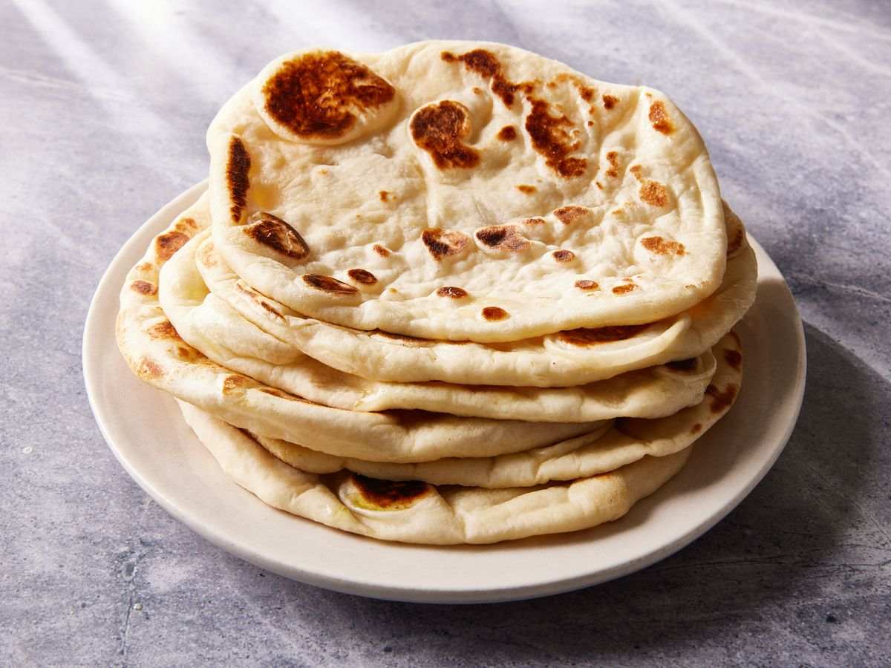

Naan

Description:
Savor the soft and fluffy delight of homemade naan, a classic Indian flatbread. Freshly baked and brushed with melted butter, it's the perfect accompaniment to your favorite curries or dishes. Enjoy this versatile and aromatic bread as it elevates your meal with its warm, comforting texture and flavor.
Ingredients:
- 2 cups all-purpose flour
- 1 teaspoon sugar
- 1 teaspoon active dry yeast
- 1/2 teaspoon salt
- 1/2 cup warm milk
- 1/4 cup plain yogurt
- 2 tablespoons cooking oil or ghee
- 2 tablespoons melted butter (for brushing)
- Fresh chopped cilantro or garlic (optional, for flavor)
Steps:
- In a small bowl, combine warm milk and sugar. Sprinkle the yeast on top, give it a gentle stir, and let it sit for about 5-10 minutes, or until it becomes frothy.
- In a large mixing bowl, combine the all-purpose flour and salt. Create a well in the center of the flour mixture.
- Pour the yeast mixture, plain yogurt, and cooking oil (or ghee) into the well in the flour. Mix everything together to form a soft, slightly sticky dough.
- On a lightly floured surface, knead the dough for about 5-7 minutes until it becomes smooth and elastic.
- Place the dough in a greased bowl, cover it with a clean kitchen towel, and let it rest in a warm, draft-free place for 1-2 hours, or until it doubles in size.
- Preheat your oven to the highest temperature setting (usually around 500°F or 260°C). If you have a pizza stone, place it in the oven.
- Punch down the risen dough and divide it into equal-sized portions. Roll each portion into a ball. You can also flatten and shape them into ovals or rounds using your hands or a rolling pin.
- Carefully place the naan on a hot pizza stone or a baking sheet. Bake for about 2-4 minutes, or until they puff up and turn golden brown. You can also cook them in a hot skillet on the stovetop if you prefer.
- While the naan is still warm, brush the surface with melted butter. For extra flavor, you can also sprinkle freshly chopped cilantro or garlic on top.
- Serve your homemade naan warm as a delightful accompaniment to your favorite curries or dishes.